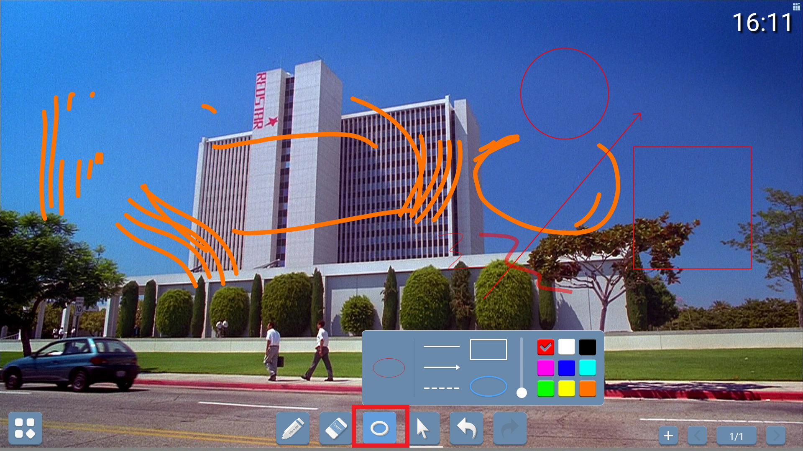

白板
点击主页的白板图标进入白板应用
画笔
点击下面的画笔按钮，选择画笔的种类，即可在白板上写和画
划线
选择画笔之后，可以在白板上单指或者多指进行操作，也可以用专用笔，可以进行任意画线
橡皮擦
点击橡皮按钮，如图所示，然后对想要擦除的地方进行拖动擦除即可

指定图线擦除
点击橡皮按钮，再点击图形擦除按钮，即可完成擦除
规则图形
点击如图所示按钮，弹出一个弹窗，可以选择箭头或者规则的圆或者方框，并且可以对线条的粗细进行调节
选中
点击如图所示按钮，点击白板中的某个曲线，即选中某个图形，可以将选中的图形进行任意的拖拽
撤销
点击如图所示红色所选按钮，可以撤销上步骤操作，点击图中绿色所选按钮，即可前一步操作
菜单栏按钮
点击如图所示按钮，会弹出一个弹窗，里面有对现书写的批注的一些操作

新建文件
点击弹窗中如图所示按钮，会新建一个白板文件

打开文件
点击弹窗中如图所示按钮，会打开文件管理弹窗，选择要打开的白板文件，即可对相应的文件再次修改

保存文件
点击弹窗中如图所示按钮，会保存文件
导出图片
点击弹窗中如图所示按钮，会将图片导出，然后选择相应的存储设备即可
发送邮件
点击弹窗中如图所示按钮，设置好要发送到的邮件地址即可

设置背景
点击弹窗中如图所示按钮，即可选择喜欢的图片替换当前图片
关于白板
点击弹窗中如图所示按钮，即可查询到关于白板应用的信息
退出白板
点击弹窗中如图所示按钮，即可退出白板应用